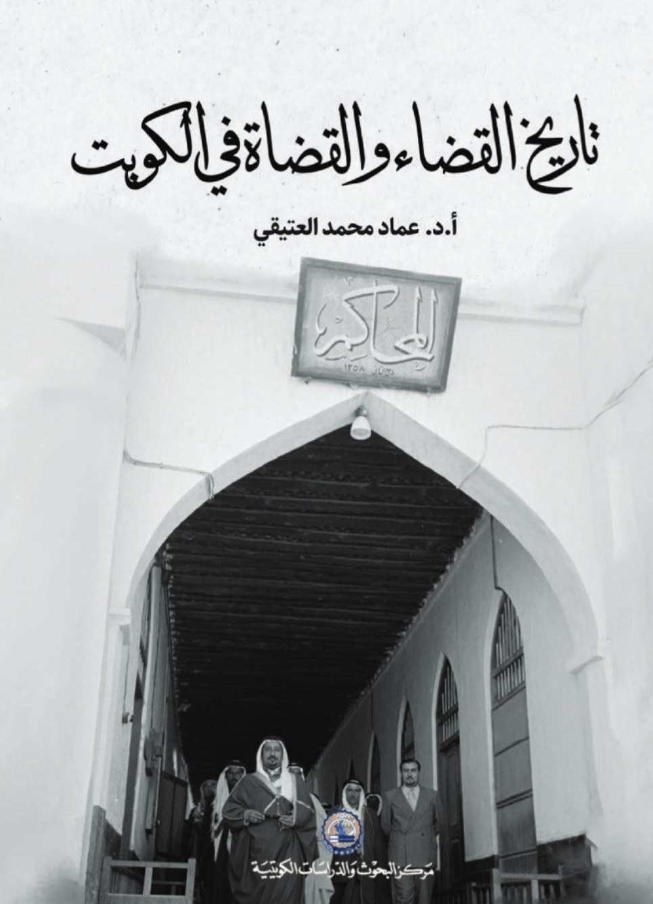
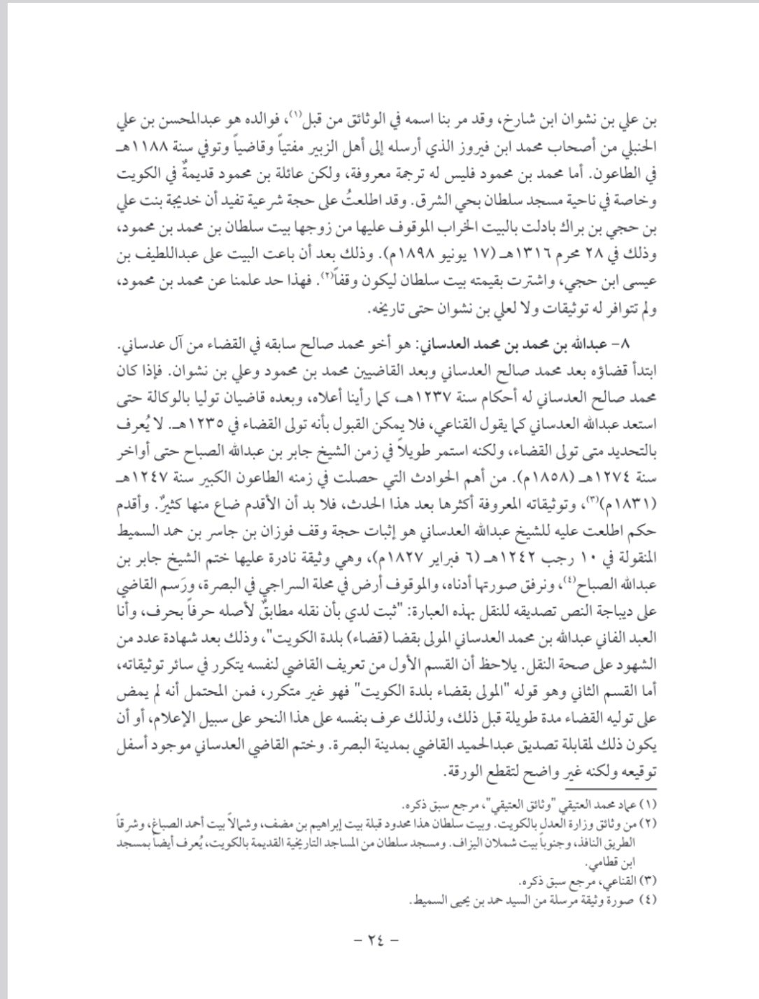

مركز البحوث والدراسات الكويتية · صفحات من كتاب أ.د. عماد محمد العتيقي، مركز البحوث والدراسات الكويتية
تاريخ القضاء والقضاة في الكويت: مسجد سلطان المعروف أيضا بمسجد ابن قطامي
ما هي
تاريخ القضاء والقضاة في الكويت. تذكر الصفحة ٢٤ حجة شرعية مؤرخة في ٢٨ محرم ١٣١٦هـ (١٧ يونيو ١٨٩٨م) تفيد بأن خديجة بنت علي بن حجي بن براك بادلت بالبيت الخراب الموقوف عليها بيت سلطان بن محمد بن محمود ليكون وقفا. ويحدد الهامش الثاني حدود البيت ويضيف: «ومسجد سلطان من المساجد التاريخية القديمة بالكويت، يُعرف أيضاً بمسجد ابن قطامي».
أهميتها
يؤكد أن مسجد سلطان كان يعرف أيضا باسم العائلة. ويتفق ذلك مع وثيقة سنة ١٨٦٣ التي تضع بيت عبدالوهاب ابن قطامي ملاصقا لأرض مسجد سلطان، ومع الجزء السابع من معالم مدينة الكويت القديمة الذي يذكر أن المسجد عُرف بمسجد القطامي لمجاورته بيت عبدالعزيز بن عبدالوهاب القطامي.
صور الصفحات


أسماء أخرى
المصادر
أ.د. عماد محمد العتيقي، تاريخ القضاء والقضاة في الكويت، مركز البحوث والدراسات الكويتية، ص ٢٤، هامش ٢
كيف كُتب هذا النص: مصورة من الصفحات المطبوعة.
افتح في الموقع التفاعلي